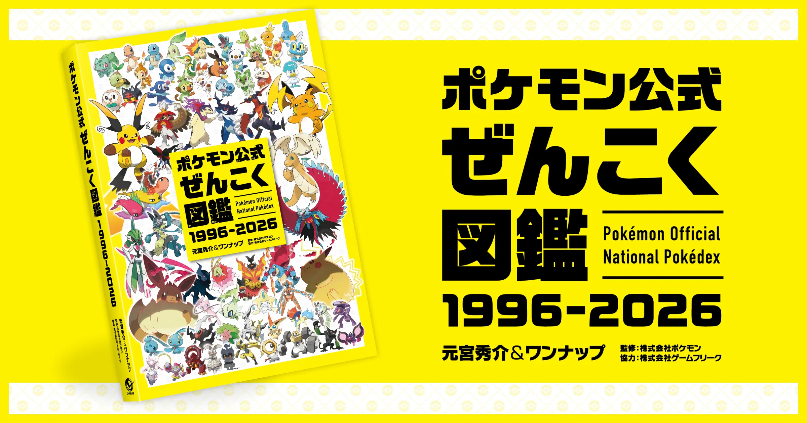
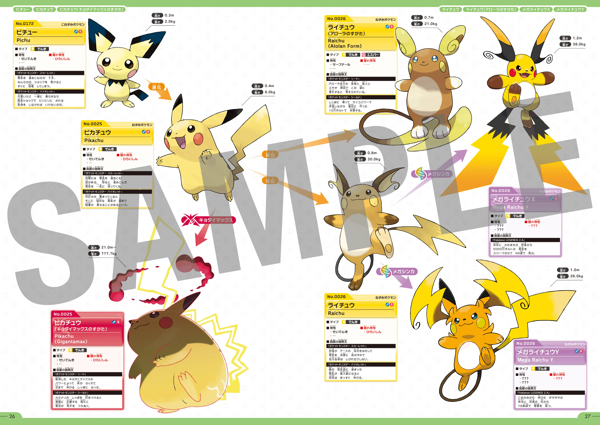
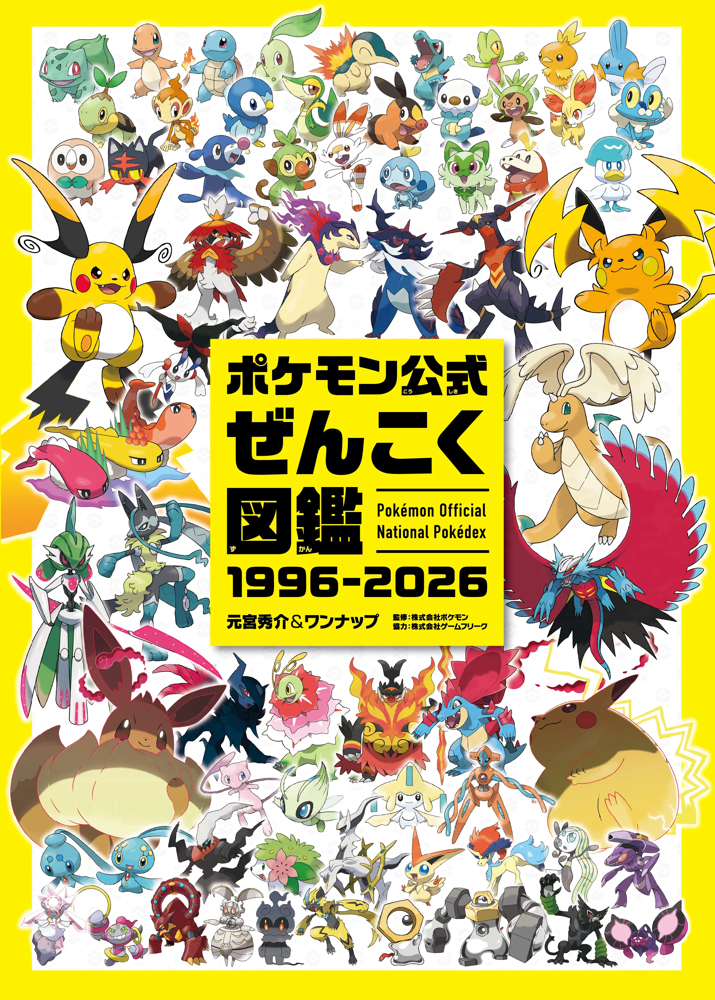
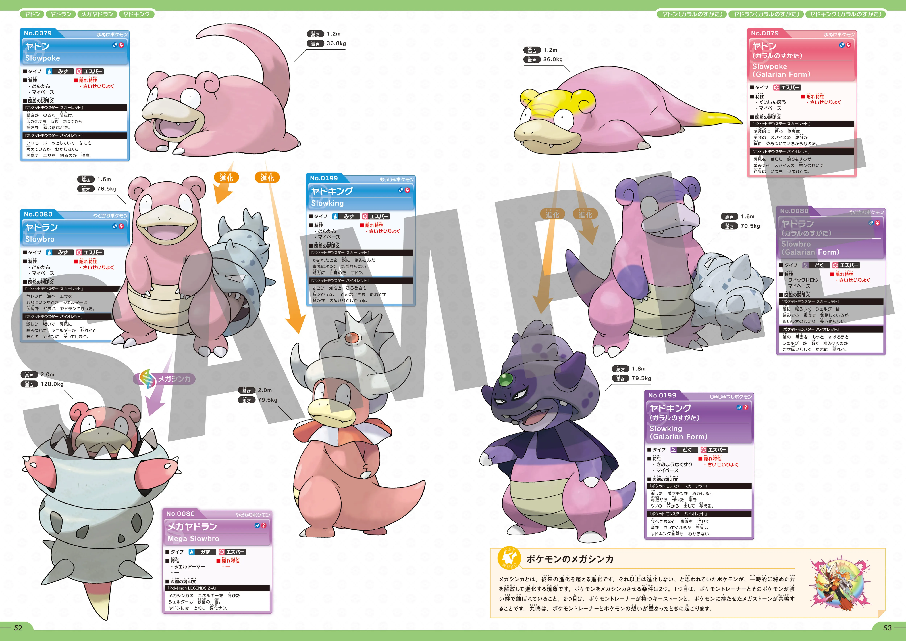
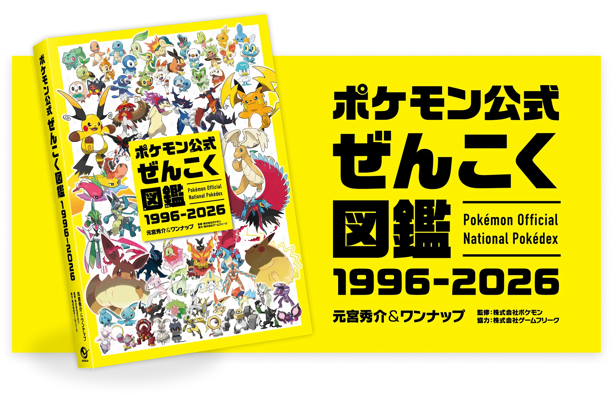

포켓몬 공식 전국도감 1996-2026 발매 총정리
1025마리, 448페이지, 30년. 1996년 시리즈 출발부터 딱 30주년을 맞은 올해, 그동안 등장한 포켓몬 전부를 한 권에 눌러 담은 책이 나왔어요. 「포켓몬 공식 전국도감 1996-2026」이 지난 8월 7일(금) 서점에 풀렸어요. 온라인에서는 흔히 '포켓몬 30년 도감'으로도 불리지만, 정식 서명은 이 하나뿐이에요. 도감을 순서대로 채워온 팬이라면 반가울 소식이라, 발매일과 가격, 국내에서 구하는 법까지 한 번에 정리해봤어요.
마지막 업데이트 2026.08.11 · 오버랩(over-lap.co.jp) 공식 상품 페이지 기준

오버랩이 공개한 「포켓몬 공식 전국도감 1996-2026」 공식 키비주얼이에요.
이미지: 오버랩(over-lap.co.jp) 공식 상품 페이지
도서 정보
포켓몬 공식 전국도감 1996-2026, 정확히 어떤 책일까
이 책은 1996년 시리즈 출발부터 2026년까지 30년간 등장한 포켓몬 전부를 한 권에 모은 오버랩(주식회사 오버랩)의 공식 도감이에요. 편저는 모토미야 슈스케(元宮秀介)와 원업(ワンナップ)이 맡았고, 주식회사 포켓몬이 감수를, 게임프리크가 협력을 맡아 이름 그대로 '공식' 타이틀을 달았어요.
온라인 커뮤니티에서는 발매 소식이 퍼지면서 '포켓몬 30년 도감'이라는 이름으로 이렇게도 불리는데, 이건 어디까지나 통칭이에요. 표지에 실제로 인쇄된 정식 서명은 「포켓몬 공식 전국도감 1996-2026」 한 줄뿐이라, 서점 검색창에 찾아 넣거나 매장 직원에게 문의할 때는 정식 서명으로 말해야 헷갈릴 일이 없어요.
저는 '포켓몬 30년 도감'이라는 이름을 먼저 접했는데, 표지를 실제로 살펴보니 정식 명칭이 따로 있더라고요. 검색이나 주문은 정식 서명으로 하는 편이 확실해요.
수록 내용
무엇이 담겨 있을까 — 1025종·448페이지 구성
이 책에는 1996년부터 2026년 3월 말까지 등장한 포켓몬 1025종 전체가 전국도감 번호 순서로 실려 있어요. 각 포켓몬 항목에는 타입·분류·키·몸무게·특성·숨겨진 특성·도감 설명·영어 이름 같은 기본 정보가 2026년 3월 말 시점 최신 데이터로 정리돼 있고, 메가진화·다이맥스·리전폼처럼 포켓몬 세계관 전반에 걸친 용어도 따로 해설이 붙어 있어요. 여기에 전국도감 번호순 검색 리스트와 50음순 색인까지 갖춰서, 이름이나 번호 어느 쪽으로 찾아도 바로 원하는 페이지를 넘길 수 있게 만들었어요.

공식 페이지가 공개한 내지 샘플이에요. No.·이름·타입·키·몸무게·도감 설명문이 포켓몬별로 정리돼 있고, 진화 화살표와 메가진화·거다이맥스 같은 폼 변화도 함께 표시돼 있어요.
이미지: 오버랩(over-lap.co.jp) 공식 상품 페이지
| 항목 | 내용 |
|---|---|
| 판형 | B5판 |
| 분량 | 448페이지, 전 컬러 |
| 수록 종수 | 1025종(1996~2026년 3월 말 기준) |
| 편저 | 모토미야 슈스케 & 원업 |
| 감수·협력 | 감수 주식회사 포켓몬 · 협력 게임프리크 |
| ISBN | 978-4-8240-1717-8 |
구성 — 오버랩 공식 상품 페이지·패미츠(famitsu.com) 보도 기준, 2026-08-11 확인

실제 표지 이미지예요. 448페이지답게 두께가 상당한 편이에요.
이미지: 오버랩(over-lap.co.jp) 공식 상품 페이지

야돈·야드란·야도킹 계열 도감 페이지 옆에 '포켓몬의 메가진화'를 짧게 풀어주는 해설 칼럼이 따로 실려 있어요.
이미지: 오버랩(over-lap.co.jp) 공식 상품 페이지
저는 숫자 중에 448페이지가 제일 눈에 들어와요. 도감 한 권에 30년치를 다 담으려니 이 정도 두께가 나온 것 같아요.
가격
가격은 얼마이고, 세금은 포함일까
정가는 세금 별도 2,500엔이고, 세금을 포함하면 2,750엔이에요. 오버랩 공식 상품 페이지와 패미츠 보도 모두 '세금 별도 2,500엔'을 기준 가격으로 안내하고 있어서, 실제 계산대에서 결제하는 금액은 세금이 포함된 2,750엔 쪽이라는 점을 기억해두면 좋아요. 원화로 단순 환산하면 세금 별도 기준으로 약 2만 6천 원 안팎인데, 이건 환율에 따라 달라지는 참고용 수치일 뿐 실제 결제 금액과는 차이가 날 수 있어요.
| 구분 | 금액 |
|---|---|
| 세금 별도(정가) | 2,500엔 |
| 세금 포함 | 2,750엔 |
| 원화 환산(참고) | 약 2만 6천 원(세금 별도 기준) |
가격 — 오버랩 공식 상품 페이지·패미츠 보도 기준, 2026-08-11 확인 · 원화 환산은 환율에 따라 달라질 수 있는 참고 수치
세금 별도 가격만 보고 있다가 마지막에 금액이 달라 보이면 당황할 수 있으니, 2,750엔 쪽을 실제 지불액으로 기억해두는 게 편해요.
국내 구매
한국에서는 어떻게 구할 수 있을까
이 책의 한국 정식 발매 여부는 2026년 8월 11일 확인 시점 기준으로 확인되지 않았어요. 오버랩은 일본 출판사라 이번 도감도 우선은 일본 국내 유통을 기준으로 나온 책이에요. 국내 대형 서점이나 수입도서 코너에 정식으로 들어올 가능성이 아예 없는 건 아니지만, 이번 확인 시점까지는 국내 정식 입고 소식이 따로 나오지 않았어요. 지금 바로 손에 넣고 싶다면 해외 구매 경로를 통하는 방법이 현실적이에요.
| 방법 | 설명 |
|---|---|
| 해외 직구 | 일본 온라인 서점·쇼핑몰에서 직접 주문하고 해외배송으로 받는 방법이에요. 오버랩 공식 페이지가 안내하는 판매처는 아마존재팬·세븐넷(セブンネット)·라쿠텐북스·요도바시닷컴 네 곳이에요. |
| 구매대행·배송대행 | 국내 구매대행 업체나 배송대행지를 통해 일본 서점에서 산 책을 국내로 들여오는 방법이에요. |
| 오버랩 공식 페이지(확인처) | 출판사 공식 상품 페이지(over-lap.co.jp)에서 위 네 판매처 링크와 최신 상품 정보를 한 번에 확인할 수 있어요. 직접 결제하는 곳이 아니라 판매처를 안내해주는 확인처예요. |
구매 경로 — 오버랩 공식 상품 페이지 기준, 2026-08-11 확인 · 판매처(아마존·세븐넷·라쿠텐·요도바시) 링크는 오버랩 공식 페이지 게재분을 그대로 옮김 · 국내 정식 유통 여부는 계속 확인이 필요해요 · 관련 보도 — 인벤(2026-05-15)
448페이지짜리 전 컬러 도서라 무게가 꽤 나갈 것 같아서, 직구든 배송대행이든 배송비까지 미리 따져보고 주문하는 게 좋을 것 같아요.
직구나 배송대행으로 구매를 고려하신다면 몇 가지는 미리 확인해두시는 게 좋아요. 448페이지 전 컬러 B5판이라 무게가 꽤 나가는 편이라 배송비가 판형이 작은 책보다 더 붙을 수 있고, 해외에서 개인 앞으로 물건을 들여올 땐 개인통관고유부호가 필요해요. 환불·취소나 품절 시 처리 방식은 판매처(아마존·세븐넷·라쿠텐·요도바시)마다 다르니, 결제 전에 정책을 직접 확인해두시는 걸 추천해요. 국내 대형서점 중 알라딘은 '외국도서 스페셜오더' 서비스로 아직 등록되지 않은 해외 신간도 ISBN으로 신청 주문할 수 있는데(안내 기준 7~10일~2~3주 소요), 이 책이 실제로 들어오는지는 서점에 직접 문의해서 확인하는 게 확실해요.
정리
그래서 뭘 기억해두면 될까
숫자로 다시 정리해볼게요. 1996년부터 2026년까지 30년간 등장한 1025종이 B5판 448페이지 전 컬러로 묶였고, 발매일은 8월 7일, 가격은 세금 별도 2,500엔(세금 포함 2,750엔)이에요. 국내 정식 발매는 아직 확인되지 않았으니, 지금 당장 소장하고 싶다면 해외 구매 경로를 알아보는 쪽이 현실적이에요. 저희가 예전에 정리했던 포켓몬 30주년 콜라보 굿즈 총정리나 포켓몬빵 30주년 띠부씰 글도 30주년을 기념하는 다른 상품들이 궁금하실 때 함께 보시면 도움이 될 거예요.

오버랩이 공개한 메인 상품 이미지예요. 노란 배경에 표지 실물과 정식 서명 로고가 함께 담겨 있어요.
이미지: 오버랩(over-lap.co.jp) 공식 상품 페이지
발매 시점 기준 최신 데이터(2026년 3월 말)라 이후 새로 등장한 포켓몬이 있다면 다음 개정판에서나 반영될 것 같아요. 지금 기준으로는 이 1025종이 가장 최신 목록이에요.
결국 이 책은 1996년부터 지금까지의 포켓몬을 한 권에 모은 30주년 기념 공식 도감이에요. 국내 정식 유통 소식은 아직 없지만, 도감을 처음부터 채워온 분들껜 시간을 들여서라도 구해볼 가치가 있는 책 같아요. 저희도 국내 입고 소식이 뜨면 이 글에 바로 이어서 업데이트할게요.
자주 묻는 질문
포켓몬 공식 전국도감 1996-2026 자주 묻는 질문
Q'포켓몬 30년 도감'이라는 이름으로도 검색되나요?
네, 온라인에서는 '포켓몬 30년 도감'이라는 통칭으로도 검색돼요. 다만 표지에 실제로 인쇄된 정식 서명은 「포켓몬 공식 전국도감 1996-2026」 한 줄이라, 서점에서 정확히 찾으려면 정식 서명으로 검색하는 게 확실해요.
Q몇 마리가 실려 있나요?
1996년 시리즈 출발부터 2026년 3월 말까지 등장한 1025종이 전국도감 번호순으로 전부 실려 있어요.
Q가격은 세금이 포함된 금액인가요?
정가로 안내되는 2,500엔은 세금 별도 금액이에요. 세금을 포함하면 2,750엔이 실제 결제 금액이에요.
Q한국 서점에서 바로 살 수 있나요?
2026년 8월 11일 확인 시점 기준으로는 국내 정식 발매 소식이 확인되지 않았어요. 지금은 해외 직구나 구매대행 같은 경로로 구하는 방법이 현실적이에요.
#포켓몬전국도감 #포켓몬공식도감 #포켓몬30주년 #오버랩 #포켓몬굿즈 #포켓몬직구 #포켓몬1025마리